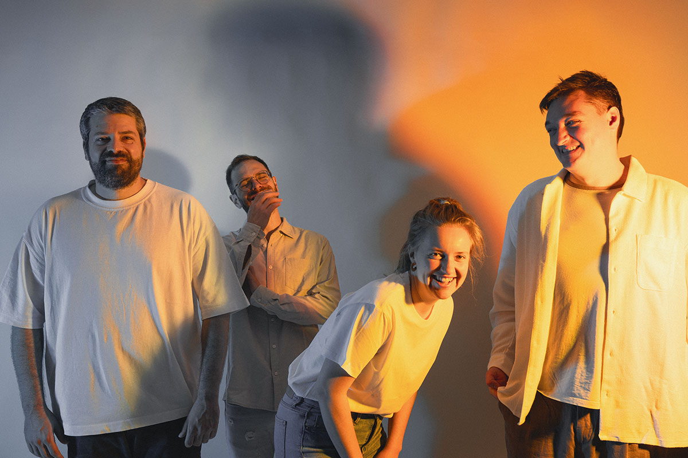
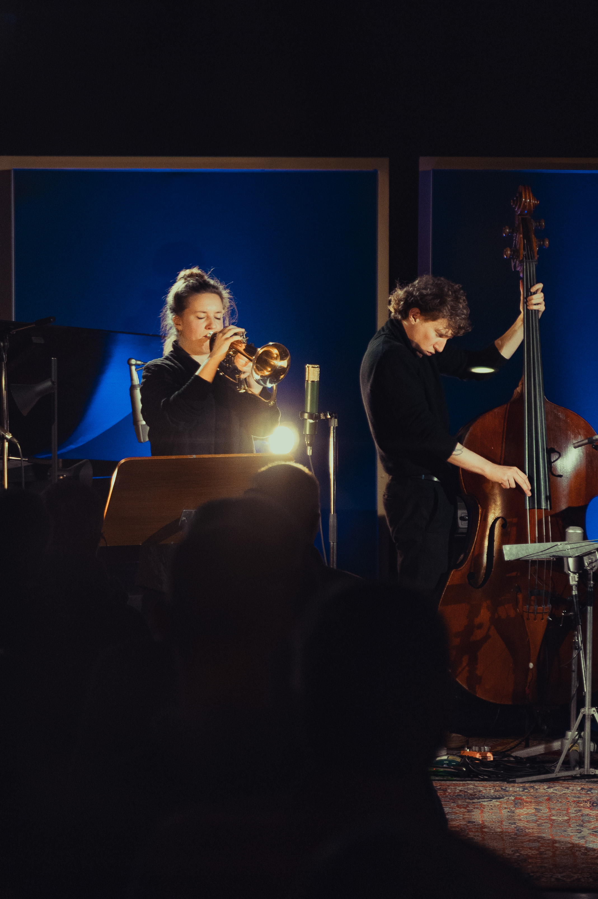
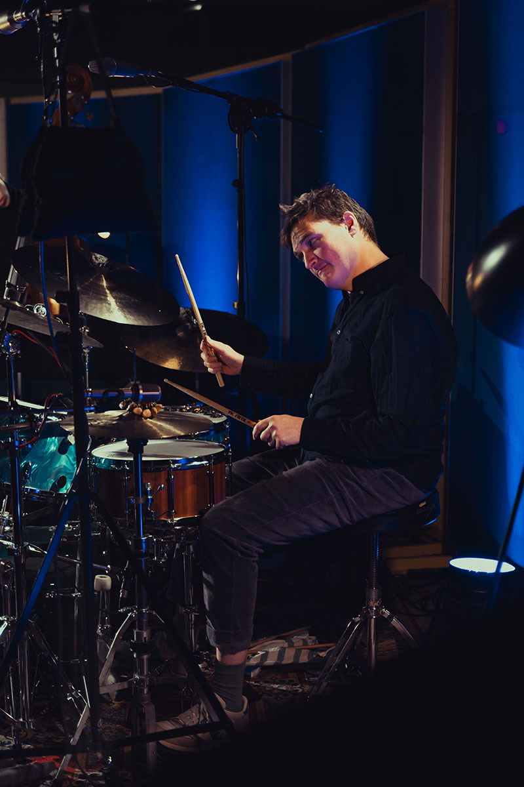
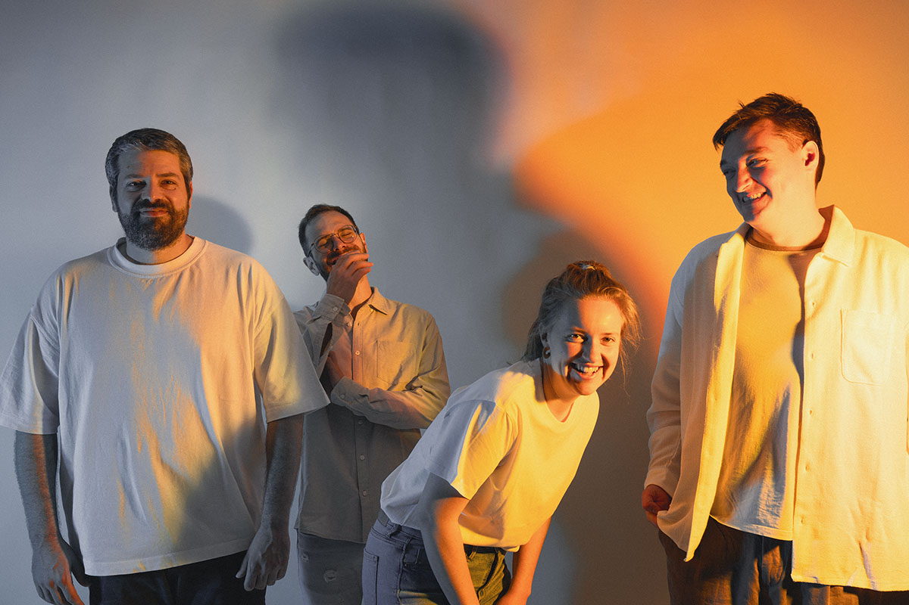
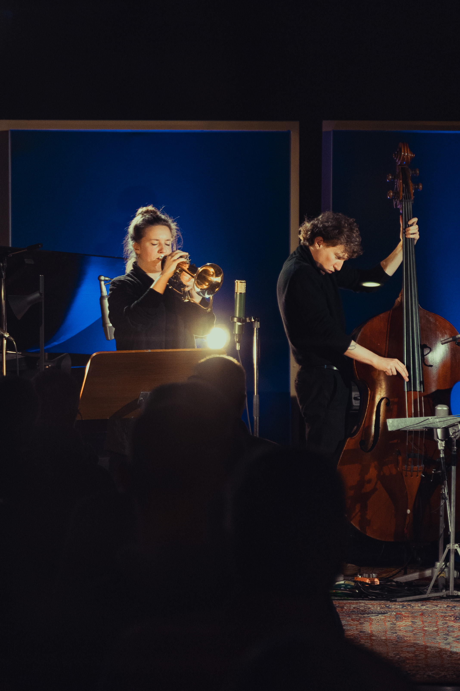
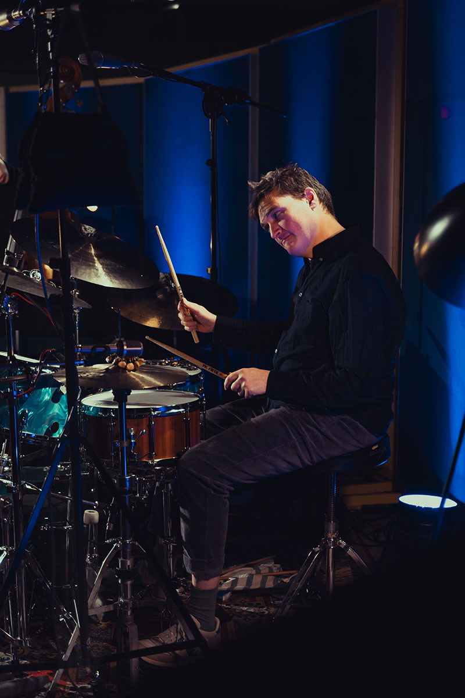
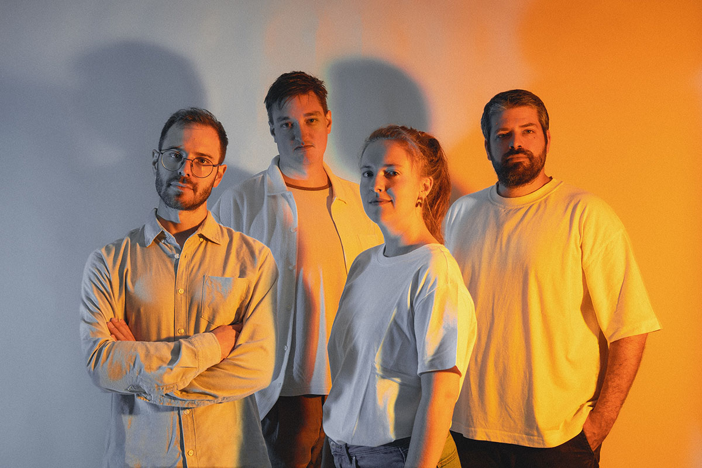
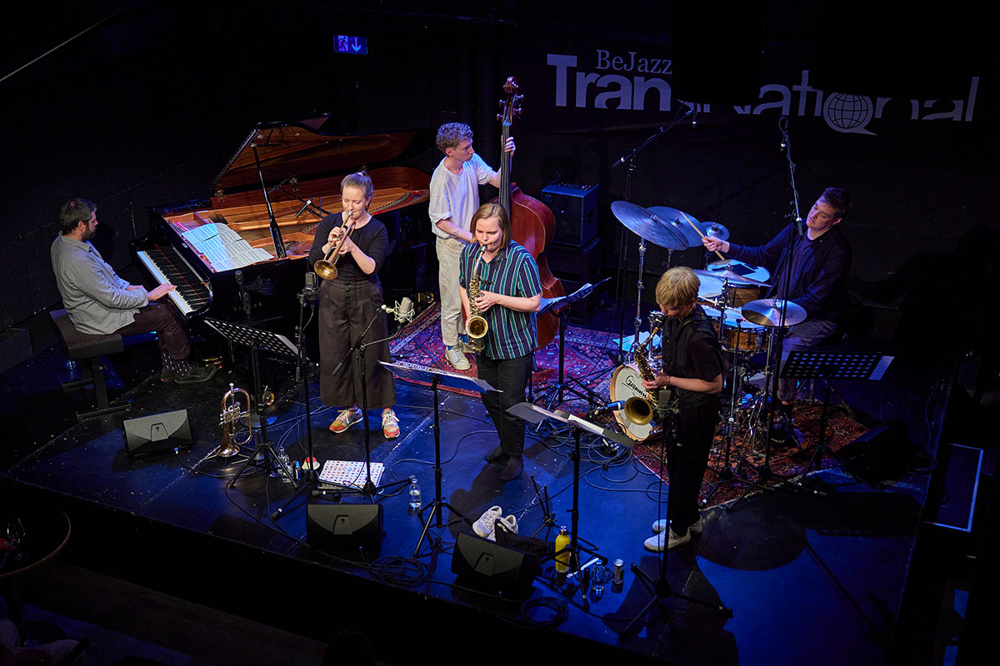
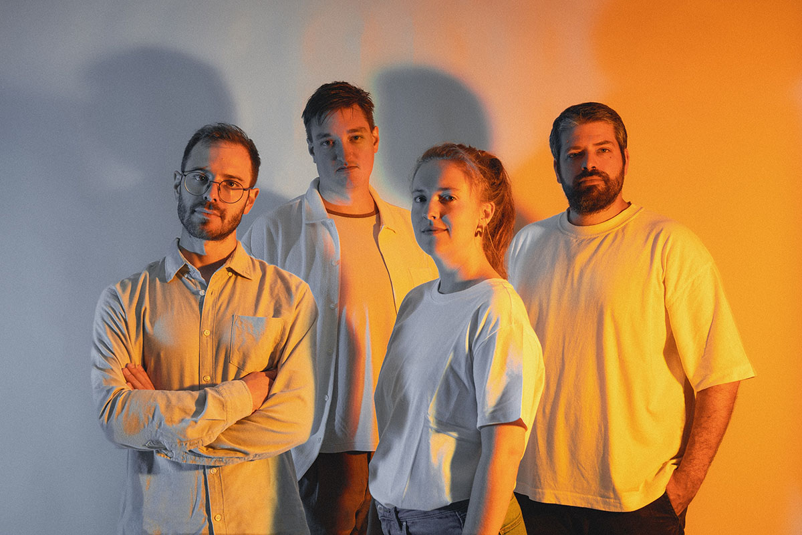
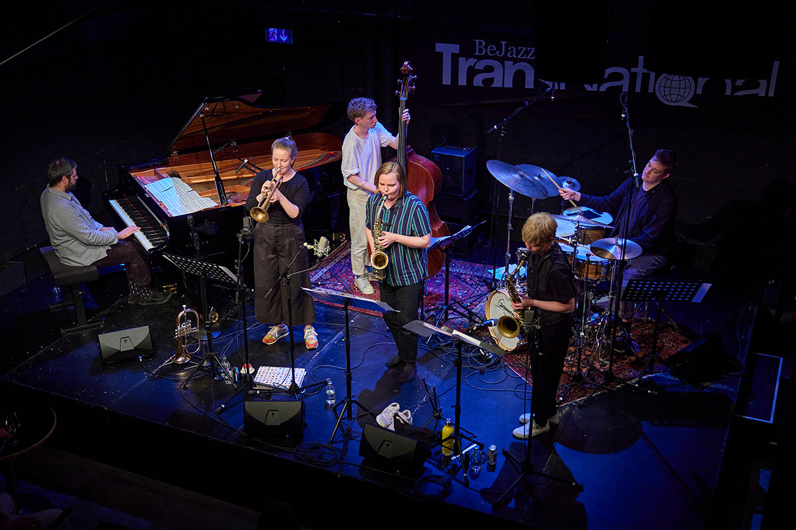

KONZERTE
07.04.2025 Jazz Chur, Lokal Postremise
24.05.2025 Schaffhausen Jazz Festival
04.06.2025 Jazz Club Tübingen, DE
06.06.2025 Jazz Club Ludwigsburg, DE
14.06.2025 Feilenhauer, Winterthur
01.11.2025 Kinora 6tet - Wendlandjazz, Gedelitz DE
Auswahl vergangener Konzerte:
28.09.2023 Bird’s Eye, Basel
17.01.2025 Kinora Sextett - Bejazz Winterfestival
18.01.2025 Kinora Sextett - Jazz In Bess, Lugano
 





 


